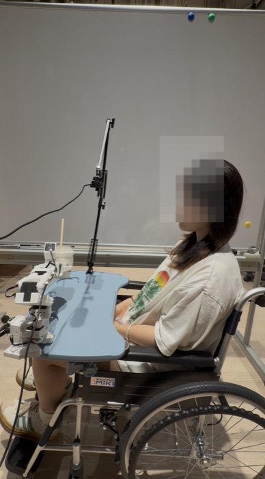
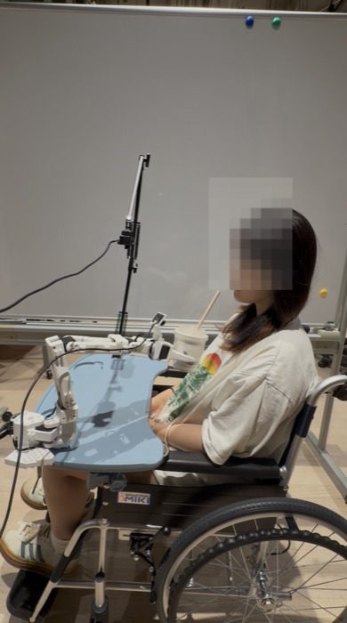
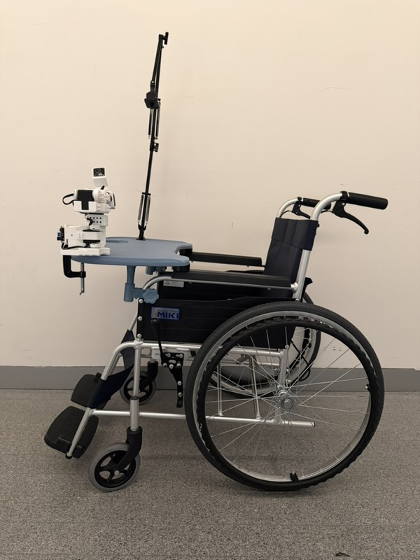

Stop / pause fast path: goes straight to the arm, never through the cloud or the ToolDispatcher
Local
Cloud
Local
Local gate
Wake phraseopens stream
Stop / pausealways on

Router
Server-side VADspeech start, end
Audio-native LLM
Function callfixed schema
Packet
- function
- target
- destination
- module
- checks
- transcript
ToolDispatcher
Packet validationfive ordered checks
- Accepted
- Clarify
- Rejected
- Logged
SmolVLA

VLA policyinstruction + camera images → action chunks
ArmController

LeRobot commandsmove, grasp, release, home
stop
execution state
Packet example
- function
- deliver
- target
- cup
- destination
- mouth_pose
- module
- smolvla_cup_mouth_pose
- checks
- [target_visible, controller_ready]
- transcript
- "bring the cup up so I can drink"
ToolDispatcher checks, in order
- Schema
- function and fields match the schema
- Arguments
- target and destination present, unambiguous
- Module
- trained module exists, task authorized
- State
- controller ready, target visible, no interruption
- Limits
- step size, speed, reach




